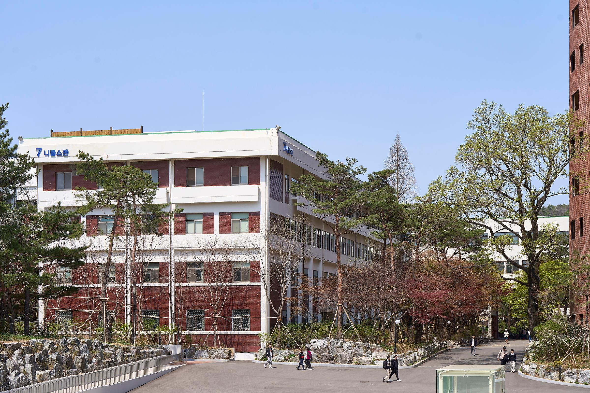

이 장소가 의미 있는 이유
4층에 하랑이라는 카페가 있어서 좋아하는 건물이다.
찾아가는 방법
학교 중심부에 있는 건물이다. 4층으로 올라가면 카페 하랑이 있다.
여기에서 해볼 것
- 4층 카페 하랑에서 음료 한잔 하며 쉬어가기
- 학교 중심에서 보이는 캠퍼스 풍경 둘러보기
출처
사진: 가톨릭대학교 홈페이지 캠퍼스맵 / 정보: 본인 작성
4층 카페 하랑이 있어 잠시 쉬어가기 좋은 학교 중심 건물

4층에 하랑이라는 카페가 있어서 좋아하는 건물이다.
학교 중심부에 있는 건물이다. 4층으로 올라가면 카페 하랑이 있다.
사진: 가톨릭대학교 홈페이지 캠퍼스맵 / 정보: 본인 작성